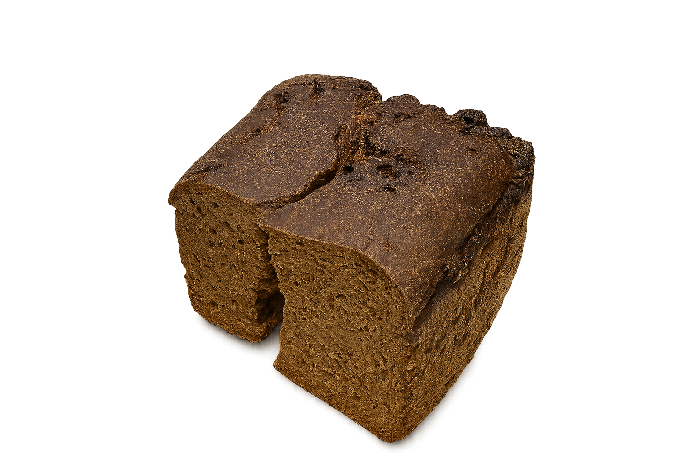

В музее мы увидели экспонат под названием «Бір үзім нан», который отражает трагедии людей, прошедших через годы репрессий, голода и депортаций.
Этот небольшой кусочек хлеба принадлежал Майе Кляшторной — дочери репрессированного белорусского поэта Тодора Кляшторного.
Память о пережитых трудностях

Будучи ребёнком, она постоянно голодала и получила этот маленький кусочек хлеба от матери, чтобы хотя бы чувствовать запах пищи и чуть легче переносить голод.
Со временем он стал для неё символом выживания и памяти о тяжёлых годах.
Сегодня этот хлеб выставлен в музее как напоминание о судьбах тысяч людей, которые прошли через голод, страх и разлуку, но сохранили человеческое достоинство.